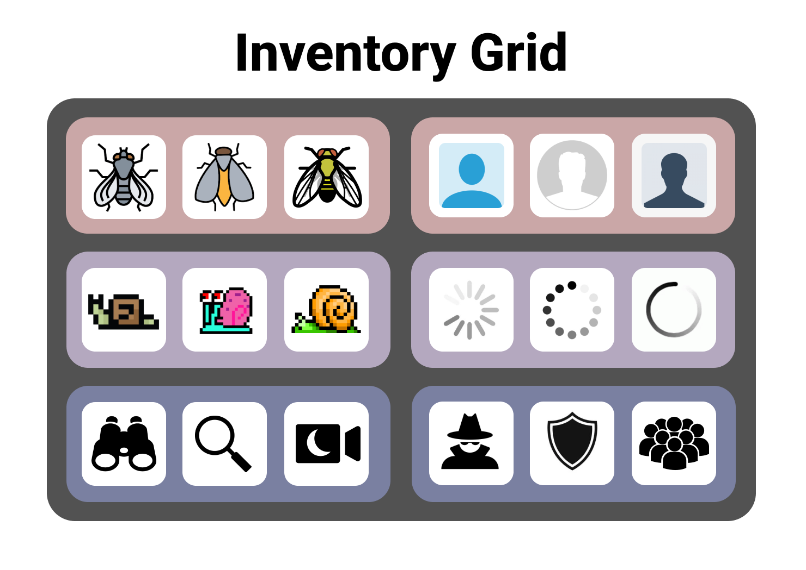
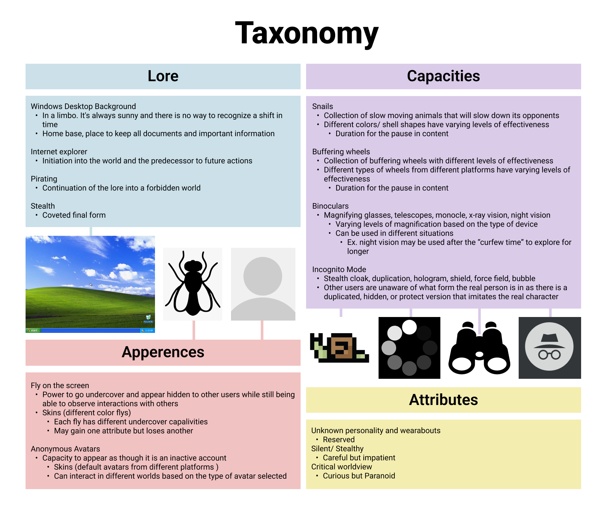
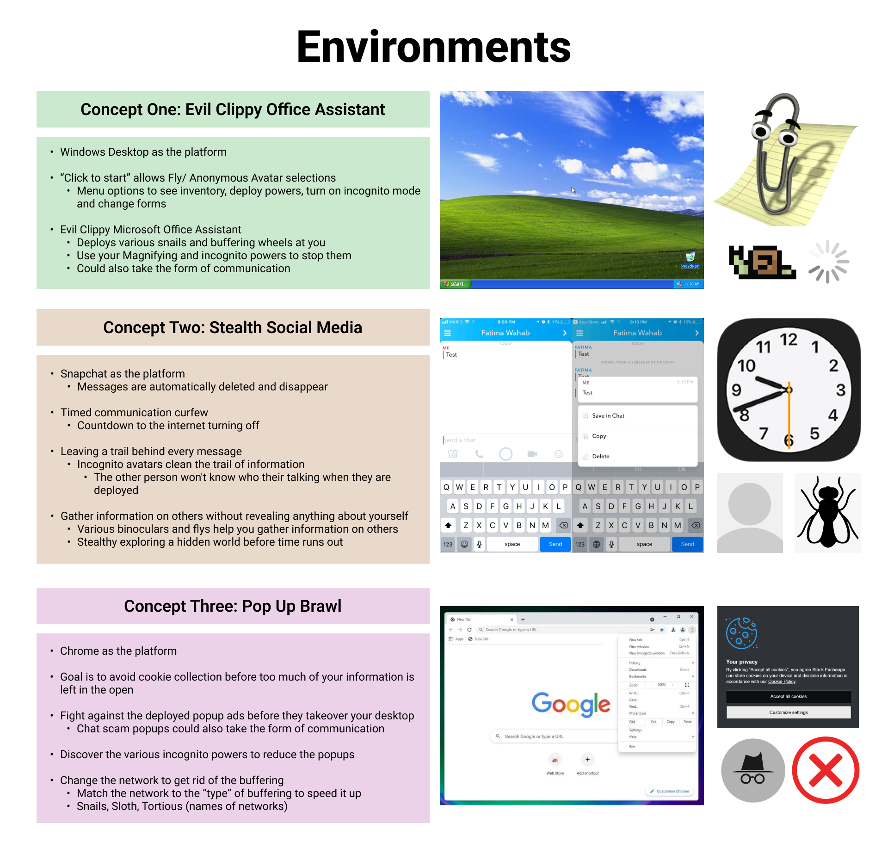

Concept
The conceptual origin for my avatar started with a reflection on my interactions with the internet over the years. I chose to divide my experiences into 3 categories starting with my childhood, followed by my middle school years, and lastly how I feel about the internet currently. For every category I came up with 2-3 icons that represented each era on the internet for me. These were then put in an inventory for my avatar.
Early Years (Unusably Slow)
- Snails
My early interactions online were tainted by the practically unusable internet we had at my house. It was so slow that my dad named the network “snails.” We have faster WiFi now, but when it cuts out the default connects back to snails which to this day is still very slow…
- Microsoft Desktop
At home we had a family computer that ran Windows. It had the standard green hill + clouds desktop wallpaper. I would stare at the screen for what felt like hours after clicking on the “e” internet explorer icon, waiting for it to load. Since I was extremely impatient, I would click the icon a bunch of times and when it finally did load it would open up way too many extra web browsers.
- Buffering Wheel
During these times I also started watching TV shows on YouTube. Since there was no way for the platform to keep up with all the pirated content, I was able to watch full episodes and sometimes even the entire season of a TV show. Unfortunately since our WiFi was so slow the videos were constantly interrupted by an endlessly spinning “buffering” wheel.
Transition into Secrecy (Rebellion)
- Binoculars
When I was a bit older I got my own device (an iPod Touch) which I began to use constantly. Whenever I was grounded my access to technology was confiscated. This resulted in me watching my brother play online video games out of the corner of the room while I wasn't allowed to participate.
At this time my parents also made it very clear that we were not allowed to have any social media accounts. I of course made a few which lead me to start secretly and distantly “lurking” around different platforms.
- Fly
I became a fly on the wall in a world that was forbidden to me. I observed others without interacting and kept myself expertly hidden. I looked at what my friends from school posted and talked to them through messaging applications but I never ventured beyond to expose any information about myself publicly.
Undercover (Battle for Privacy)
- Default Avatar
As I got older I kept up my “private presence” online. No longer out of the fear of my parents finding out, but rather the paranoia of my information being so easily discoverable online. I keep the standard avatar on most of my accounts and they are all private so only those with permission can view. I also hesitate to post any of my work online, as I find my desire for public validation overshadowed by a fear of people stealing or monetizing off of my work without my knowledge.
- Incognito Mode
These days I feel as though I am constantly fighting against my digital footprint. From “cookie collection,” to cross-application information tracking, and targeted ads it feels like there’s no way to keep any part of your life to yourself. Although it may not actually stop my information from being collected, I browse the web in incognito mode to give myself the illusion that it will be slightly more difficult to collect my data.
Process
The icons from my inventory were utilized in a taxonomy to describe the lore, capacities, appearances, and attributes of my avatar. I used this as a launchpoint to come up with 3 possible environments for my avatar to exist within. I decided to work with the third concept of the Pop-Up Brawl. At first it was a very complex game-like interaction, but I paired it down significantly to create a simpler version. This is the storyline I generated for the web page interaction.
Blank Browser
-
Start with a blank generic google browser window
-
The user clicks on the search bar as they typically would
-
A pop-up appears
-
The user attempts to 'X' out of the pop-up but it isn't removed and instead another pop-up appears on the screen
-
Each time you attempt to 'X' out of the pop-up another one appears
Live Chat
- “Hello, how may I assist you?”
There is no option to exit the chat so you're forced to interact with it by typing a message.
When you click 'enter' on your keyboard to send a response another message will appear in the chat
- “I'm not sure I understand. Could you provide further information regarding your inquiry?”
When you click 'enter' on your keyboard to send a response the final message will appear in the chat
- “I'm sorry I will not be able to assist you with that. Allow me to transfer you to another department.”
On the next click several chat assistants will take over the screen for several pages
Javascript Pop-Up
- Your computer may be infected
Javascript message “Downloading files in progress”
- Virus Warning x3
Javascript message “Personal information obtained”
- Virus Warning x5
Javascript message “Data collection complete”
Video
- Your computer has been locked
- The screen eventually turns into a glitch
- Avatar flashes
- More glitches
- Second avatar
- More glitches
Ending
- Everything turns to black and you can see your own reflection in your computer adding an introspective/ contemplative finale to the storyline.
Throughout the website glitches, flashing avatars, and red elements to foreshadow the end of the storyline. This incorporates the malicious/ cryptic elements from my original taxonomy, and creates a more personal connection to my online “paranoia.”



Reflection
The process of this project was interesting as I was led to a completely different place then I had anticipated when I started it. Generally, it was quite gratifying as I was able to practice some coding and develop a website with some interactive elements.
The most difficult part of this project was paring down and refining all my ideas into a coherent product. The topic of “my life on the internet” is extremely vast and complex since I have been using it my entire life. Coming up with a concept that was both personal to me but could still be understood by others posed a challenge.
I think the most successful parts of this project are the components that take over the browser and actually make it look like something is hacking your computer. If I were to do this project again I would definitely want to include a more complex interactive “nefarious” character, that is more responsive to each player's messages and inputs. In future projects I definitely would like to explore more of these possibilities.
Throughout the process I learned a lot about myself. I didn't realize just how much my perspective on the internet has changed over the years. I was also surprised by my experiences in comparison to my classmates. A few of them also shared my hesitancy, paranoia, and anonymous interactions with the internet, which I had originally thought to be a lot more uncommon among my generation.